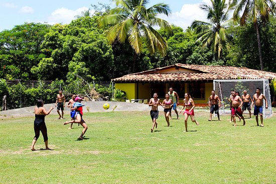
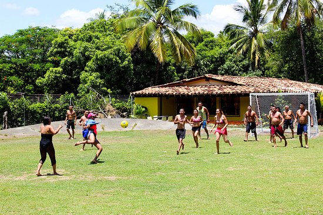

Hospedaje
En "Las de Oros" encontrará un refugio perfecto en medio de la naturaleza.
Nuestras cómodas habitaciones están diseñadas para brindar descanso, tranquilidad y una experiencia inolvidable.
Rodeado de áreas verdes y paisajes campestres, podrá relajarse y desconectarse del estrés diario.
Horario de atención: Disponible las 24 horas del día, los 7 días de la semana.
Nuestro equipo está siempre listo para atenderlo con la mejor hospitalidad.

 
